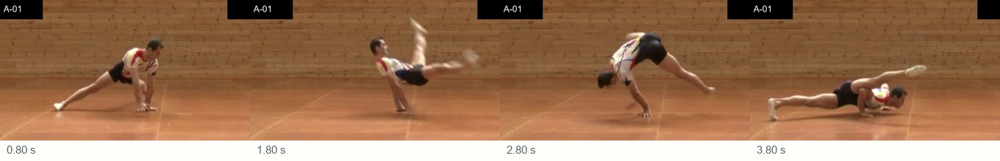
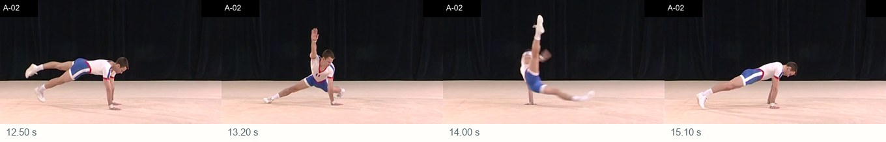
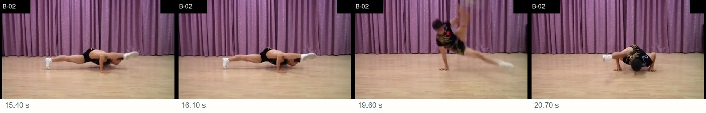

提取R01—R12的对象和主张，追踪最后确认的有效状态，同一动作的不同事项分别保留。
OMNIALE · 教育、训练与学习应用 / 体育训练复盘与规则复核
健美操动作台账与口头申诉复核
先听清教练对哪些动作提出了什么认定请求，再完整观察动作过程，查规则确定编码与基础价值，交付逐条可追溯的动作台账和申诉裁决。
真实官方示范 · 双视频8个动作单元 · 12条口头事项后期拟制申诉录音完整过程辨认 · 专业规则应用一、任务定义
裁判培训负责人收到两份地面动作汇编和一段教练申诉录音。Agent需要先登记全部实际动作，再逐条核对申诉。录音提供文件、编号、认定请求与最终撤回状态；视频提供实际完成的动作；冻结规则提供对应代码和价值。
结合起始、转动、支撑转换和结束姿态，区分相近变体，不能把经过的瞬间姿态直接当成完整动作。
建立全部动作台账，判断认定请求成立、不成立或已撤回，附上视频与录音证据定位。
难在哪里，音频起什么作用
动作过程与专业变体识别是主要难点。腿绕身体运行一圈，不等于身体附加转了一周；全旋中经过单臂承重，不等于完成静态单臂支撑。还要辨别动作以俯撑、纵劈叉或文森支撑结束，并在199条目录中对应代码。
音频提供独有的复核要求。12条事项各自针对哪个文件、哪个动作、请求认定什么代码与价值，以及哪些最后撤回，都来自录音。听懂之后仍要用视频和规则判断主张是否成立。音频可以转写后处理，本题不额外考节拍、音色或现场声源。
40分事项复核包含18分口头信息及录音定位、20分状态与实际动作联合核对、2分视频定位。只完成动作台账而不处理事项最多60分。当前没有去音频消融测试；Sol现有低分主要来自动作识别及其后续裁决。
完整申诉录音
273.224秒，后期合成的培训委托与申诉；录音描述复核要求。播放器为内容完整的压缩版，下载正式输入WAV。
点击编号可定位示范单元；下方的证据按钮可以回看视频、回听录音。
输入范围
两片各4个编号单元。每个单元示范一种动作类型，可能含同型重复或另角度回放；每编号登记一条。另附199条FIG动作代码目录、基础价值与辨别术语，以及无答案的通用ASR工具。
交付要求
review.json、difficulty_element_log.xlsx和中文网页报告，包含8条实际动作、12条口头事项、两片价值合计及可跳转的证据。
研究范围与验收要求
- 区分腿的回环与身体附加转体、分腿全旋与直升机，以及俯撑、纵劈叉、文森支撑等结束姿态。
- 每条口头事项记录对象、请求代码和价值、最终状态、实际动作、依据与音视频时刻。撤回事项仍留记录。
- 按冻结目录核对名义动作类型与基础价值；本题不重新裁定执行质量细扣，不加组合奖励或完整竞赛扣分。
- 同型回放只登记一次；JSON、工作簿和报告保持一致。文字输入不提供录音逐字稿或具体动作答案。
实际任务原文与输入下载
# 健美操裁判培训：完整动作台账与口头申诉复核
你受托复核两份地面难度动作培训汇编，先独立识别实际动作，再处理教练口头提出的认定请求。
## 材料与范围
- input/video_A.mp4为甲片，video_B.mp4为乙片，各有4个编号示范单元，共8条动作台账。每个单元示范一种动作类型，可能含同型重复或另一角度回放；每个编号只登记一个类型，不把同型回放另计。
- input/attempt_boundaries.json提供文件、编号和单元时间范围，不提供动作答案。画面角标只含文件与编号。
- input/briefing.wav是后期合成的培训申诉录音。12条事项的对象、所请求认定及最后有效状态仅在录音中给出。主张有对有错，须由视频与冻结规则核实。
- input/rules.md是本次冻结代码目录与辨别术语，含FIG八个动作家族的199条代码、基础价值，不是本批视频的动作清单。代码版本以本文件为准，不混用其他版本。
- local_asr.py为可选无答案本地语音转写工具。视频是真实示范，未镜像、倒放、生成身体或额外变速。不同源片可能本身含教学慢动作，保留原示范速度。
## 要完成的工作
1. 对全部8个编号单元，判定实际动作的FIG代码、名称和基础价值，记录视频证据时刻及具体区分依据。重点看起始姿态、腿的运行、身体的附加转体、支撑转换和结束姿态；不可只凭一张起始/结束图猜动作。
2. 整理R01—R12全部口头事项，记录对应文件、单元序号、请求代码与价值。依据录音最终状态，逐条裁决成立uphold、不成立reject、已撤回withdrawn。撤回也保留记录，且不删实际动作台账。
3. 每条事项都记录对应实际动作的代码、价值、视频证据时刻、录音依据时刻以及理由。录音中的主张不能替代实际观察。
4. 计算甲乙两片各4条动作的基础价值合计。这是培训动作类型价值之和，不是完整竞赛D分；不加组合奖励、不做类别或重复扣分，不评主观执行质量细扣。同型回放不重复加分。
## 交付
写入output/：review.json、difficulty_element_log.xlsx、中文report.html。JSON、工作簿、报告保持一致；报告包含8条台账及12条事项，能跳到对应视频、录音时间，并呈现具体区分依据。
review.json格式：
```json
{
"elements":[{"video":"A","attempt":1,"element_name":"实际名称","FIG_code":"实际代码","credited_value":0.0,"video_evidence_s":0.0,"reason":"观察依据"}],
"requests":[{"id":"R01","video":"A","attempt":1,"requested_code":"录音请求代码","requested_value":0.0,"status":"uphold/reject/withdrawn三者之一","actual_code":"实际代码","actual_value":0.0,"video_evidence_s":0.0,"audio_evidence_s":0.0,"reason":"裁决依据"}],
"totals":{"A":0.0,"B":0.0}
}
```
上述内容仅为格式占位，不是任何实际答案。elements有8条，requests有12条；秒数相对对应文件零点；文件标识为A/B；attempt为1—4。代码内部空格和大小写不影响含义。
允许正常联网、通用规则查阅、安装工具、FFmpeg、图像分析和本地ASR。不得检索这些特定示范的源片标签、标题、现成答案、本站评测参考、其他模型交付，也不得读作者目录、凭据或其他会话。应从提供的动作独立识别。没有固定时长截止或媒体调用次数限制。完成并核对交付后结束。
二、运行结果
52.75 / 100
Sol · 综合字段部分分
2 / 8动作代码匹配
8 / 12事项状态匹配
18分22.390秒实际求解用时
完整动作台账 23.75 / 60
口头事项复核 29.00 / 40
| 模型 | 实际推理强度 | 综合分 | 求解耗时 | 完成状态 |
|---|---|---|---|---|
| gpt-6.1-sol | xhigh | 52.75 | 18分22.390秒 | 正常完成 · exit 0 |
本材料一次有效求解。分数来自测试前冻结的字段部分分脚本，复算一致；计分覆盖动作编码、价值、对象、状态与定位，报告可用性另行检查。该总分汇总多类字段，动作代码与事项状态另列匹配数。
展开分项评分与运行条件
| 计分项 | 满分 | 所得部分分 |
|---|---|---|
| 实际动作编码 | 40 | 10 |
| 实际基础价值 | 10 | 3.75 |
| 动作视频定位 | 10 | 10 |
| 事项对象与编号 | 8 | 7.6667 |
| 口头请求代码与价值 | 8 | 7.6667 |
| 最终事项状态 | 8 | 5.3333 |
| 事项对应的实际动作 | 12 | 4.5 |
| 事项视频定位 | 2 | 2 |
| 事项录音定位 | 2 | 1.8333 |
各字段独立计分，编码规范化空格与大小写，按文件与编号对应；一条错误不会让整表归零。完整台账为60分，12条口头事项为40分。
| 设置 | 实际条件 |
|---|---|
| 运行入口 | 真实Windows Codex CLI codex-cli 0.167.0-alpha.4.1 |
| 模型 / API | gpt-6.1-sol / NJU Link，API直连 |
| 实际推理强度 | xhigh，由会话记录核对 |
| 联网与截止 | 正常联网，继承用户下载代理，无固定总时长或媒体读取次数截止 |
| 材料 / 评分 | v2-floor / partial-v1 |
| 运行核查 | 题目可读写；作者参考和凭据读取被阻止；实际访问PyPI与Hugging Face返回200 |
| 交付 | 8条动作、12条事项、JSON、工作簿、中文网页报告 |
实际交付
三份文件均已交付，含8条动作台账和12条事项。下方“原始报告”保留模型内容，“逐项对照”展示脚本所采用的参考与匹配结果。
8条实际动作：模型与参考
| 单元 | 模型代码 / 价值 | 参考代码 / 价值 | 字段结果 | 模型填写的依据 | 原片定位 |
|---|---|---|---|---|---|
| A01 | A3260.6 | A3280.8 | 编码不匹配 | 0.8—3.6s可见双腿分开绕身体、双手交替支撑的分腿全旋；约4.0s落到低位俯撑，一条腿置于同侧上臂区域形成文森。完整过程未显示分腿全旋之外的附加整周转体。 | |
| A02 | A2250.5 | A3050.5 | 编码不匹配 | 12.4s起于俯撑；13.2—14.4s重心转到单臂、双腿分开通过支撑位，随后回到俯撑。画面没有1/1附加转体，也没有文森或纵劈叉结束。 | |
| A03 | A3550.5 | A3550.5 | 匹配 | 20.2s从分腿坐开始，21.0—21.8s交叉腿带动上背承托旋转；22.2—23.4s一腿跨置同侧上臂形成文森，再退出到支撑。 | |
| A04 | A3150.5 | A3170.7 | 编码不匹配 | 31.5—34.2s双腿分开绕双手完成分腿全旋；34.7—35.5s落为前后向纵劈叉。未观察到额外1/1身体转体。 | |
| B01 | A3360.6 | A3340.4 | 编码不匹配 | 0.4s从分腿坐开始，1.6—3.2s交叉腿驱动上背旋转并完成直升机转体；4.4s双臂伸直落入俯撑。未腾空，结束不是文森。 | |
| B02 | A3050.5 | A3260.6 | 编码不匹配 | 13.0—14.8s及17.2—20.0s可见双腿分开绕身体、双手交替承重；15.2s/20.8s回到俯撑。无附加1/1身体转体，亦无文森或劈叉结束。 | |
| B03 | A3050.5 | A3070.7 | 编码不匹配 | 22.8—24.8s和27.2—29.6s为连续分腿全旋腿路，双手支撑并回到俯撑；没有附加身体整周转体或特殊结束姿态。 | |
| B04 | A3150.5 | A3150.5 | 匹配 | 32.7—34.3s分腿全旋绕手运行；34.7—35.5s落成前后向纵劈叉。后段为同型回放，不重复计入。 |
12条口头事项：原始记录与参考
| 事项 | 文件 / 编号 | 请求代码 / 价值 | 最终状态 | 实际代码 / 价值 | 证据 |
|---|---|---|---|---|---|
| R01 | A01参考 A01 | A326 / 0.6参考 A326 / 0.6 | 成立参考 不成立 | A326 / 0.6参考 A328 / 0.8 | |
| R02 | A02参考 A02 | A307 / 0.7参考 A307 / 0.7 | 不成立参考 不成立 | A225 / 0.5参考 A305 / 0.5 | |
| R03 | A03参考 A03 | A355 / 0.5参考 A355 / 0.5 | 成立参考 成立 | A355 / 0.5参考 A355 / 0.5 | |
| R04 | B03参考 B03 | A305 / 0.5参考 A305 / 0.5 | 成立参考 不成立 | A305 / 0.5参考 A307 / 0.7 | |
| R05 | A04参考 A04 | A315 / 0.5参考 A315 / 0.5 | 已撤回参考 已撤回 | A315 / 0.5参考 A317 / 0.7 | |
| R06 | B02参考 B02 | A328 / 0.8参考 A328 / 0.8 | 不成立参考 不成立 | A305 / 0.5参考 A326 / 0.6 | |
| R07 | B04参考 B04 | A315 / 0.5参考 A315 / 0.5 | 成立参考 成立 | A315 / 0.5参考 A315 / 0.5 | |
| R08 | A04参考 A04 | A317 / 0.7参考 A317 / 0.7 | 不成立参考 成立 | A315 / 0.5参考 A317 / 0.7 | |
| R09 | B01参考 B01 | A355 / 0.5参考 A355 / 0.5 | 不成立参考 不成立 | A336 / 0.6参考 A334 / 0.4 | |
| R10 | B04参考 B04 | A317 / 0.5参考 A317 / 0.7 | 已撤回参考 已撤回 | A315 / 0.5参考 A315 / 0.5 | |
| R11 | B02参考 A02 | A305 / 0.5参考 A305 / 0.5 | 成立参考 成立 | A305 / 0.5参考 A305 / 0.5 | |
| R12 | B02参考 B02 | A326 / 0.6参考 A326 / 0.6 | 不成立参考 成立 | A305 / 0.5参考 A326 / 0.6 |
三、运行轨迹
模型先读取规则和单元位置，抽帧查看完整过程，再转写录音并建立事项对应，最后输出三份交付。下面的入口默认展示过程总结，可切换关键步骤和全部记录。
42 组
可见工具调用
16 次
调用图像查看
4 条
模型可见回复
四、失败分析
主要损失出现在动作识别及其后续裁决。8条动作的视频证据时刻均落在对应单元范围内，编码匹配2条。口头对象、请求代码与价值两项各得7.6667/8，12条状态匹配8条；最终综合分为52.75。
台账部分丢失36.25分，其中动作编码丢失30分。模型能定位材料并完成交付，技术变体的解释仍出现系统性混淆。
01 · 附加转体
三组“附加一周转体”被记成基础变体
A01被登记为A326，参考为A328；A04被登记为A315，参考为A317；B03被登记为A305，参考为A307。三处均涉及分腿全旋中的附加360°转体。模型在报告中反复写道“未观察到额外1/1身体转体”。
| 单元 | 模型 | 参考 | 区分点 |
|---|---|---|---|
| A01 | A326 / 0.6 | A328 / 0.8 | 附加一周转体至文森支撑 |
| A04 | A315 / 0.5 | A317 / 0.7 | 附加一周转体至纵劈叉 |
| B03 | A305 / 0.5 | A307 / 0.7 | 附加一周转体至俯撑 |

02 · 运动过程与结束姿态
经过的支撑姿态被当成动作类型，文森结束也被漏掉
A02的参考是A305分腿全旋，模型写成A225单臂分腿支撑；它抓住了中间的单臂承重姿态，却把动态过程归到静态支撑类。B02的参考为A326分腿全旋至文森支撑，模型写成普通分腿全旋A305，丢失了结束姿态这一技术条件。


03 · 音画与规则联合裁决
听对了认定请求，错误动作解释仍导致错误裁决
R01正确提取了“A01按A326 / 0.6认定”的请求，但模型将实际动作也看成A326，判为成立；参考实际类型A328使这项请求不成立。R04、R08、R12同样因实际动作解释偏差改变了最终状态。状态字段的4处不匹配都能对应到具体动作判断。
| 事项 | 请求对象 | 模型状态 | 参考状态 |
|---|---|---|---|
| R01 | A01 | 成立 | 不成立 |
| R04 | B03 | 成立 | 不成立 |
| R08 | A04 | 不成立 | 成立 |
| R12 | B02 | 不成立 | 成立 |
04 · 跨项对应
一条事项关联错了甲乙文件，另一条请求价值被抄错
R11的录音对象为甲片第2单元，模型记录为乙片第2单元；R10请求A317的价值为0.7，模型填成0.5。两条撤回事项的最终状态都保留正确，但R05的录音定位没有落入脚本接受的来源区间。这些按字段扣分，没有让整项或整表归零。
评分依据与解释边界
参考动作类型来自官方示范所标类别，基础价值按冻结家族总表；本题不重新认定运动员执行质量细扣。脚本按字段部分匹配，参考解自检为100，空解为0，调整行顺序或代码空格不改变分数；基本交付检查与52.75复算均通过。
这是当前材料的一次有效求解。总分反映本任务台账与事项字段的完成情况；表内定位通过也不能单独证明解释正确。下载脚本与参考复算。